November 'Scopes; & Bonus Interview
Return to Party | Find your birth date, get a not-specially crafted astrological reading
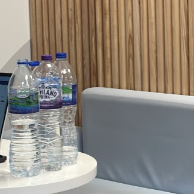
Aries (March 21st - April 19th)
Oppose the sleepy winter energy. Ditch what's keeping you down. Expand. Big Ideas. Big Plans. Big Belly. Get pregnant? Travel the world? Say yes to experiences that enrich you on a deeper level.
Your one danger is, as I have demonstrated, a scattered focus. Select your top three priorities for the month, set sensible budgets, and schedule ample sit-on-your-ass time.
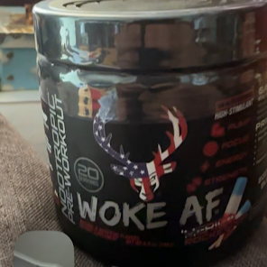
Taurus (April 20th - May 20th)
You'll probably be doing some early financial introspection. You may also begin thinking about the investments you put into your real world relationships, especially as we get into the winter holidays.
Consider journaling and sit-on-your-ass time to handle the intensities of the season. There's no harm in staying focused but allow yourself to look forward to leisure.
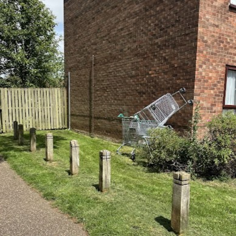
Gemini (May 21st - June 20th)
The world is noisiest around this time so if there were anytime in the year to take your foot off the gas, it would be now. Focus your attention. Nearing the end of the year, you'll feel the rush of a clear, precise finish.
It feels wrong telling you to chill and sit on your ass but I also think it's a myth to assume you would be opposed to it. You have the capacity, like anyone, to indulge in quietness. Call it plotting and scheming.
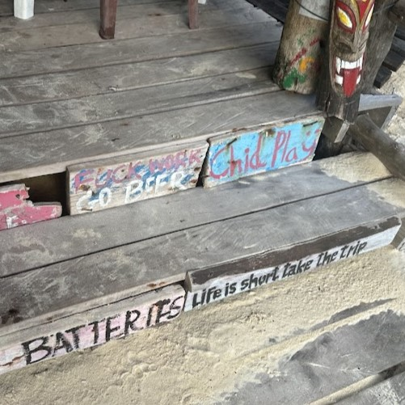
Cancer (June 21st - July 22nd)
You're going to get in your head this season and sometimes you just need to ride that tide. Try not to view your thoughts or involuntary reflections as a haunting, instead an opportunity to reflect.
Your ability to healthily process these emotions is only as good as your environment. Blanket mountains, campfires, warm treats, fairy lights, a journal or a movie. That's right, sit on your ass.
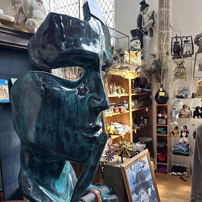
Leo (July 23rd - August 22nd)
You may already be feeling that impulse to protect your peace and close off. This is just a part of that growth stuff. Holidays aside, you're welcome to slow down and process your emotional fatigue.
The challenge you face is avoiding the mental spiral. Don't treat the upcoming end of the year as an impending deadline to sort yourself out. Sit on your ass, trust your process.
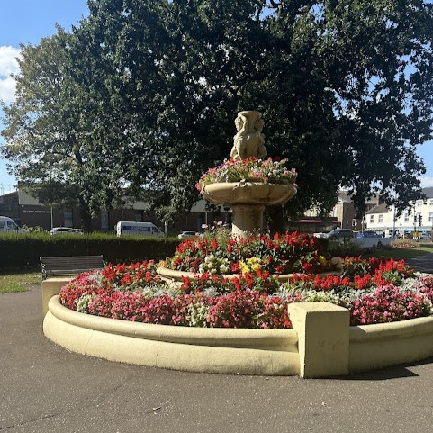
Virgo (August 23rd - September 22nd)
I get the sense that you'll be feeling especially nostalgic so remind yourself that you're not revisiting memories to fuck your shit up, you're just looking back. And then ask yourself, truthfully, what's next for you?
You're welcome to seek clarity through all modes of transport: journal, texts, emails, therapy, and true heart-to-heart's. Remember to schedule sit-on-your ass time, it's called (checks notes) physical wellness.
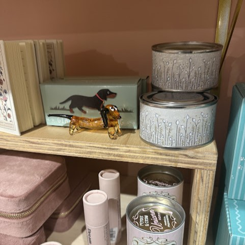
Libra (September 23rd - October 22nd)
You may feel inclined to tie up loose ends so I've gotta remind you that there is no significant harm in failing to meet some goals, especially now. Your energy drains faster but, with that, you'll also notice where it refills.
Let yourself pause before agreeing to anything. You might benefit from declaring a non-negotiable sit-on-your-ass day. Emotional waves aren't a crisis, it just happens.
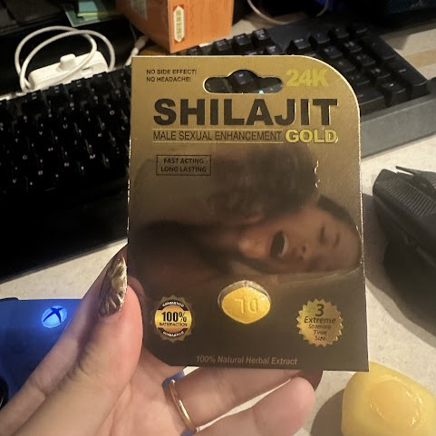
Scorpio (October 23rd - November 21st)
Hello, Biggus. Your intuitions are going to feel more prevalant than usual. [tsosi9] Shit's just gonna itch a bit (metaphorically, unless there are "roaches in your crib" as Quan Millz foretold).
As big milestones approach, so too do old wounds resurface. Instead of shutting down, identify those feelings through a safe outlet (journals, tears in the club, art, movement, ass-sitting). Nothing is all-or-nothing.
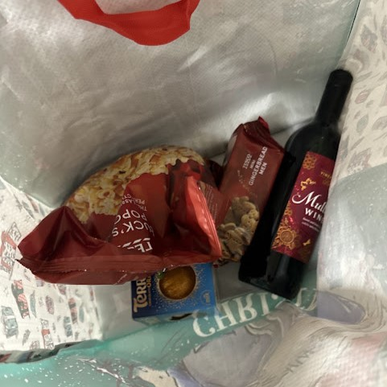
Sagittarius (November 22nd - December 21st)
Ignoring the impending holiday chaos, life may have finally given you some breathing room to finally make the little adjustments in your life (hobbies, commitments, etc.) Appreciate the progress.
It's fair enough to feel self-critical as the topic of gift-giving and family obligations floats around in your head. Check in with the people you trust, focus on light activities and simple routines like ass-sitting.
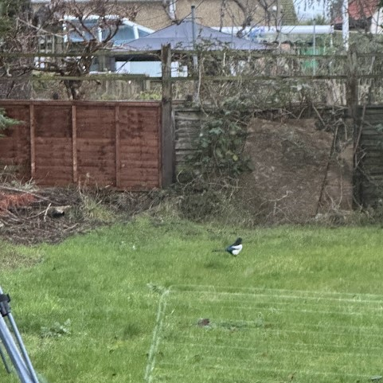
Capricorn (December 22nd - January 19th)
Remember that your energy is a resource. Your focus is pace and deliberate planning for the new year. Foster an intentional space to evaluate how you truly want to end the year.
Build small moments of rest into your week. Not necessarily just sitting on your ass but boundaries. Ask yourself if a commitment will be something you can look back on confidently a month from now.
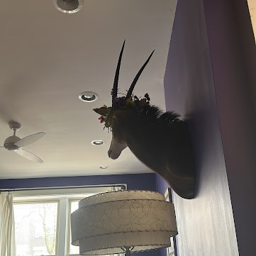
Aquarius (January 20th - February 19th)
We're two thirds into the year and it's not quite the end yet; that stasis might be hitting you especially, likely coming from a consistent pressure (e.g., work, Christmas) that just won't let up. It will let up eventually.
Remind yourself of a few things: your memories are in the past, you're allowed to move in smaller steps, and let small experiences (walks, drinks, ass sitting, songs, a safe person) ground you in the here and now.
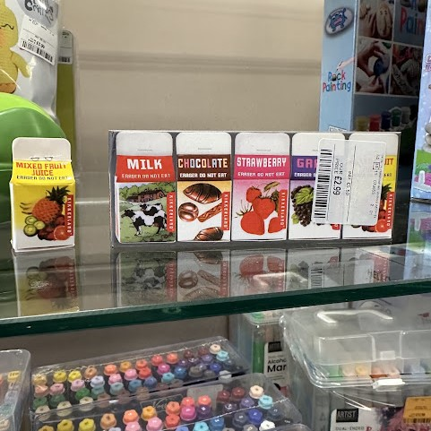
Pisces (February 20th - March 20th)
Make small, deliberate choices. Maybe be prepared to step away from the impending noise, as you're more likely than most signs to absorb the emotional energy from everyone around you.
Don't get lost in your own fantasies, nor comparisons. Ground yourself in the moment by setting short and simple to-do's that gradually shift you towards your goals. And also sit on your ass a while.